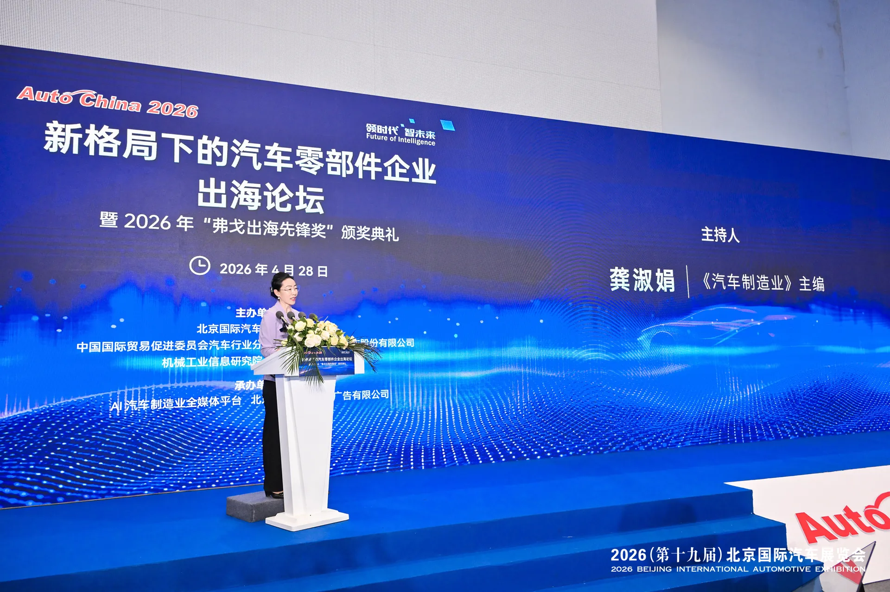
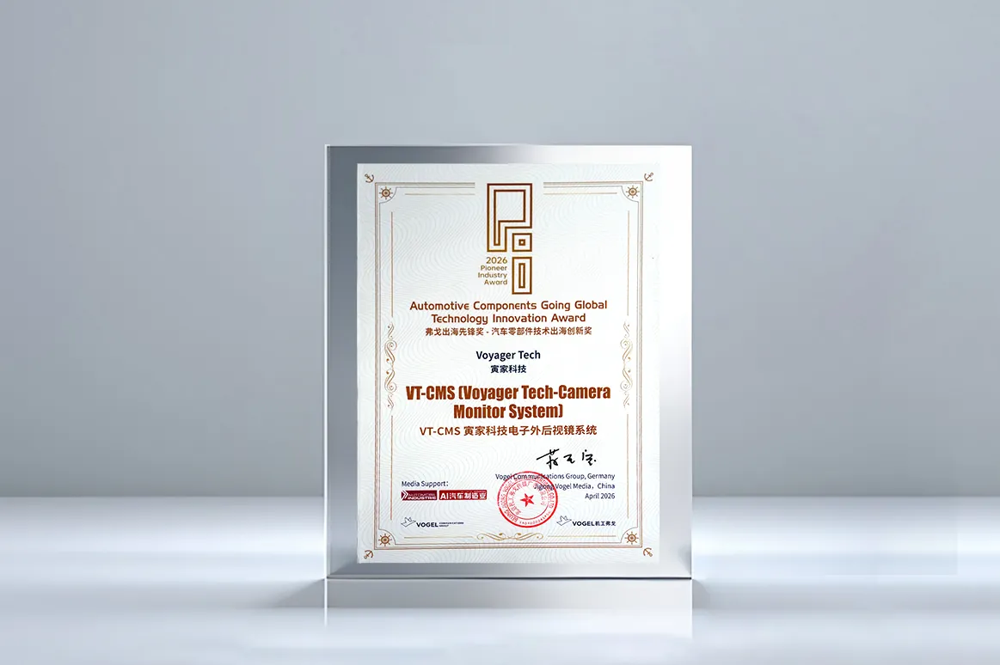

During the 2026 Beijing International Automotive Exhibition (Auto China 2026), the Automotive Parts Going Global Forum & 2026 Pioneer of Industry Award Ceremony was successfully held at the China International Exhibition Center.

Ms. Shujuan Gong, Editor-in-Chief of Automobil Industrie, delivered a speech.Voyager Tech stood out from numerous competitors with its VT-CMS (Camera Monitor System) and won the 2026 Pioneer of Industry Award·Automotive Components Going Global Technology Innovation Award, gaining industry recognition once again for its self-developed R&D and global service capabilities.

The award is co-hosted by Organizing Committee of Auto China 2026, China Council for the Promotion of International Trade Automotive Sub-Council, China National Machinery Industry International Co., Ltd. (SINOMACHINT), Machinery Industry Information Research Institute, and Vogel Communications Group. It honors benchmark enterprises with technological innovation, large-scale deployment, and market leadership in global expansion, setting a model for Chinese auto brands going global.
From January to March 2026, China exported 2.226 million vehicles, a year-on-year increase of 56.7%. New energy vehicles stood out as a key growth driver, with exports reaching 954,000 units, up 120% year on year. Exports of traditional fuel vehicles hit 1.271 million units, rising 29.9% year on year. (Source: China Association of Automobile Manufacturers)
Technology-driven, Innovation-focused
Traditional optical rearview mirrors face common industry challenges: large blind spots, poor visibility in harsh weather, high wind resistance, and high energy consumption. VT-CMS provides a digital approach to help alleviate these common industry challenges:
self-developed sensing+algorithms, clear visibility in all weather
Equipped with self-developed high-precision cameras and mature visual algorithms, it reduces rear and side blind zones. It delivers stable and clear images even in strong light, nighttime, rain, snow, fog, and other complex scenarios, enhancing driving safety.
Deep integration with smart assisted driving systems for all-round safety
Based on full-stack self-developed R&D, it collaborates with the vehicle's ADAS to provide more proactive safety protection.
Lightweight & low wind resistance for significant energy reduction
Digital imaging and lightweight structural design effectively lower wind resistance and energy consumption, supporting the energy-saving requirements of global passenger and commercial vehicles.

Full-stack R&D + Global Layout: Empowering Automakers' Globalization
This award not only demonstrates the competitiveness of VT-CMS but also reflects Voyager Tech's key strategy of u201Cfull-stack self-developed R&D + global layoutu201D. Voyager Tech VT-CMS has obtained certifications for major global markets and is ready for mass production and delivery:
Passed China's national standard test GB 15084-2022
Passed the EU's authoritative certification ECE R46
Effectively shortens automakers' global development cycles and reduces verification costs
Currently, VT-CMS has secured multiple overseas project collaborations and established stable cooperation with major overseas automakers including TATA DAEWOO MOBILITY, integrating into the global automotive supply chain.
Winning the award is not an end, but a new starting point. Voyager Tech continues to focus on intelligent sensing (VT-Sensing, VT-Navi) and intelligent decision-making&control (VT-Vulcan®). With more innovative proprietary technologies, compliant global solutions, and efficient localized services, it deeply integrates into the global automotive industry chain, providing reliable, scalable, and sustainable technical support for the global automotive industry.
Voyager Tech is pioneering a new pattern of global expansion with self-developed R&D technologies.